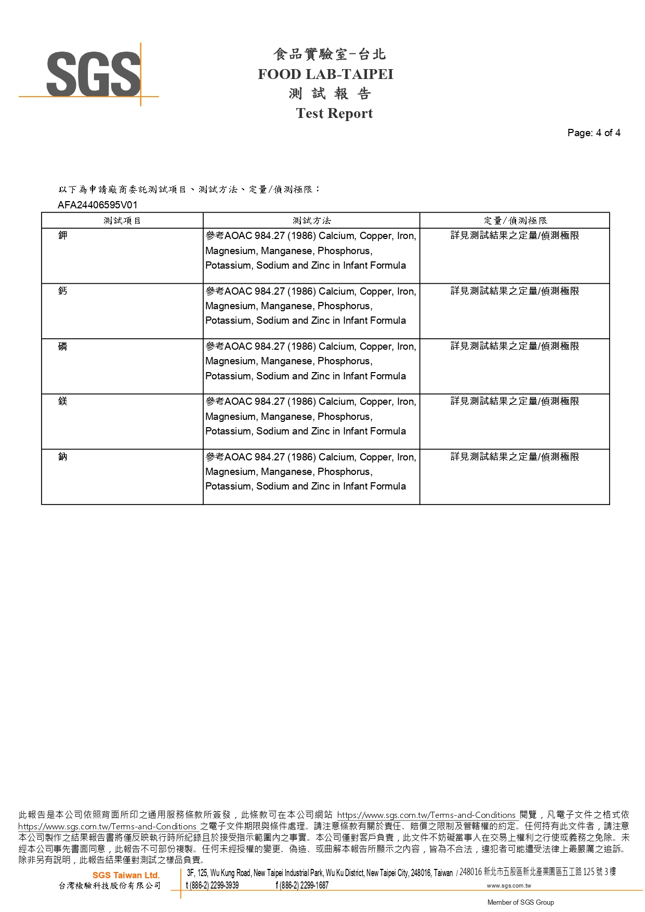

熟齡犬雞&羊&鮭魚高纖低脂配方
產品安全檢驗報告
營養成分報告
重金屬檢驗報告
微生物檢驗報告
黃麴毒素檢驗報告
營養成分報告
向左右滑動查看全部報告
營養成分分析報告第1頁
營養成分分析報告第2頁
營養成分分析報告第3頁
營養成分分析報告第4頁
營養成分分析報告第5頁
營養成分分析報告第6頁
營養成分分析報告第7頁

營養成分分析報告第8頁
1 / 8
重金屬檢驗報告
向左右滑動查看全部報告
重金屬檢驗報告第1頁
重金屬檢驗報告第2頁
重金屬檢驗報告第3頁
重金屬檢驗報告第4頁
1 / 4
微生物檢驗報告
向左右滑動查看全部報告
微生物檢驗報告第1頁
微生物檢驗報告第2頁
微生物檢驗報告第3頁
微生物檢驗報告第4頁
1 / 4
黃麴毒素檢驗報告
向左右滑動查看全部報告
黃麴毒素檢驗報告第1頁
黃麴毒素檢驗報告第2頁
黃麴毒素檢驗報告第3頁
黃麴毒素檢驗報告第4頁
1 / 3